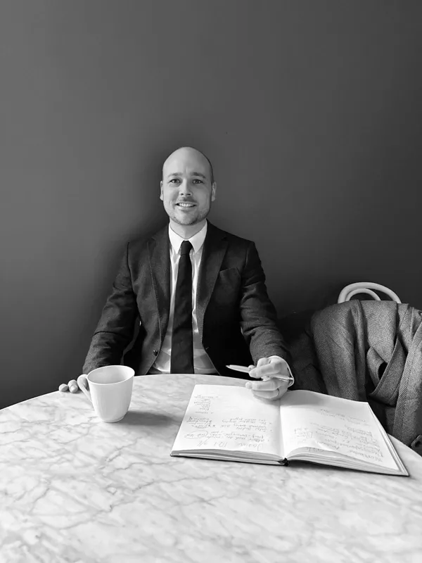

Thurne Consulting
Om företaget

Med rötter från försäljning har jag en stabil grund för att hjälpa er att nå era mål. Det innebär att ni alltid kan förvänta er personlig service utan onödiga mellanhänder. Mina kunder upplever trygghet genom goda resultat, och processer fria från tidstjuvar.
Vill ni bolla idéer eller höra mer om hur vi kan hjälpa er?
Tveka inte att kontakta mig på 070-017 22 05.
Med vänliga hälsningar,Filip Andén